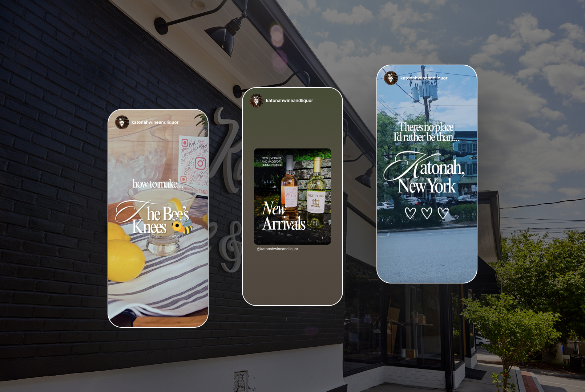
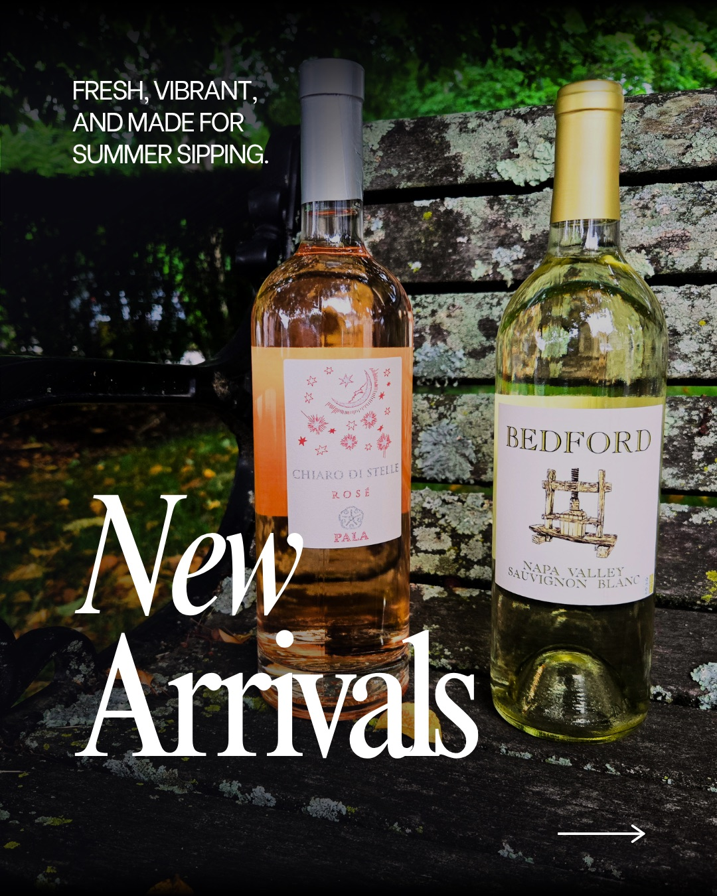
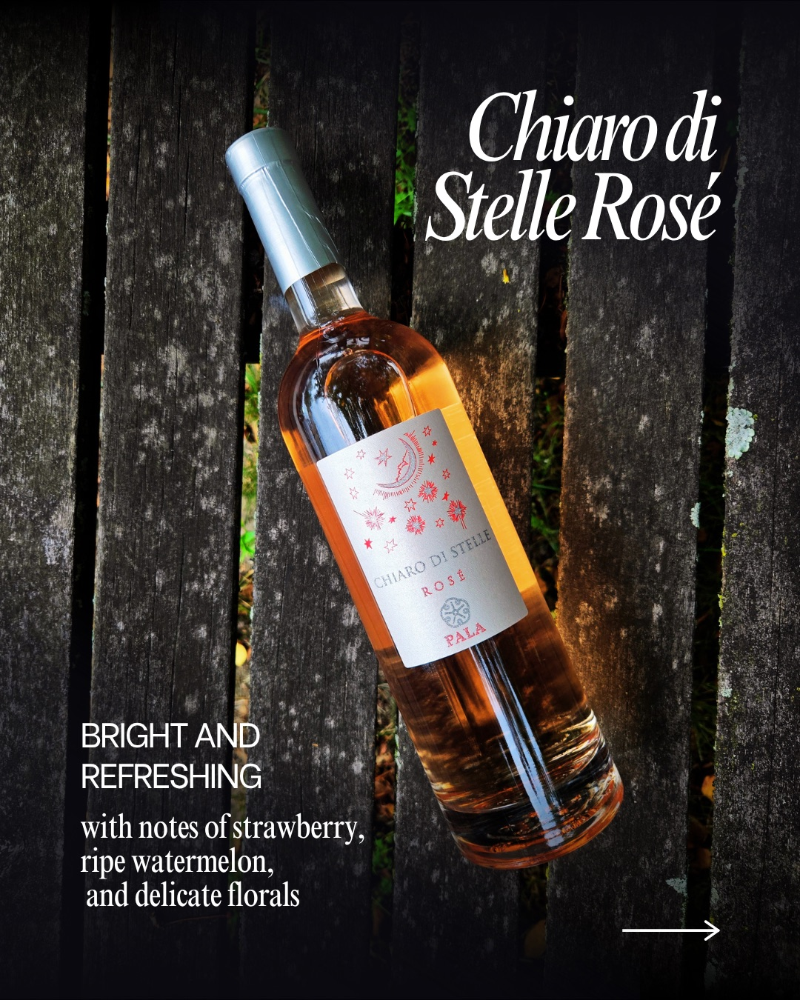
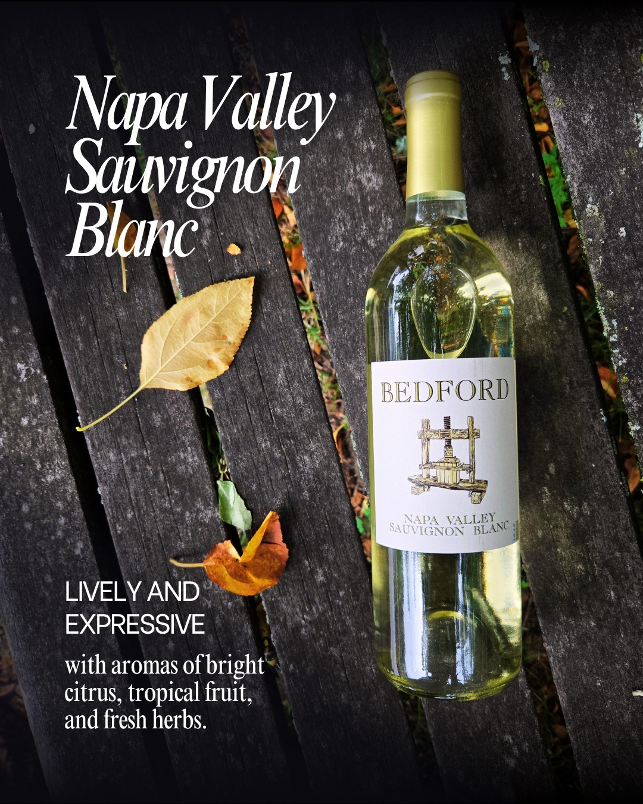
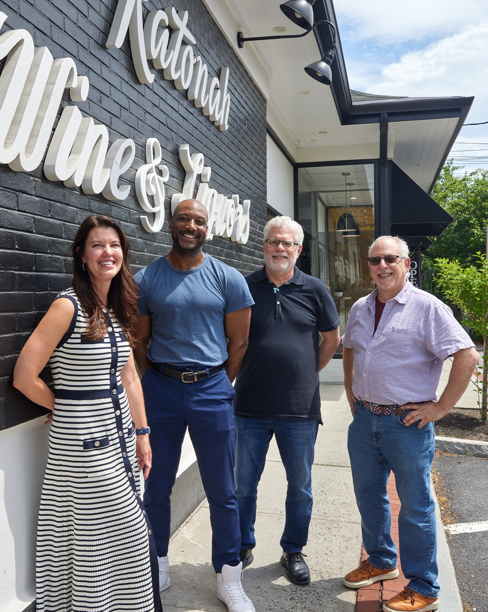
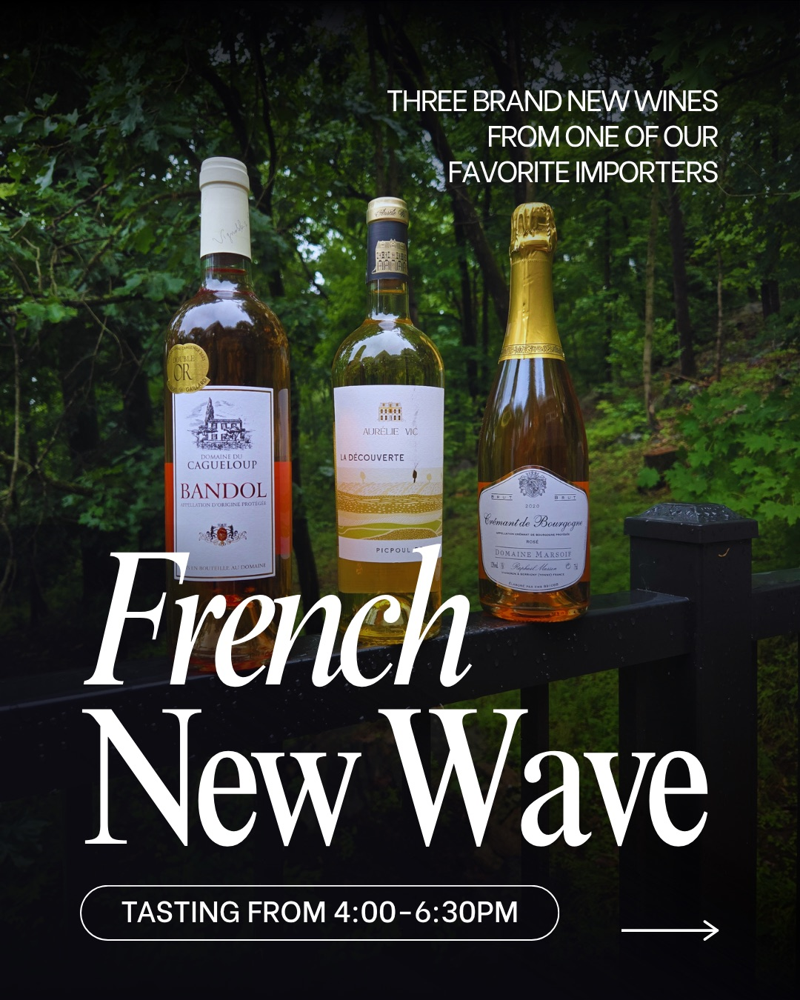
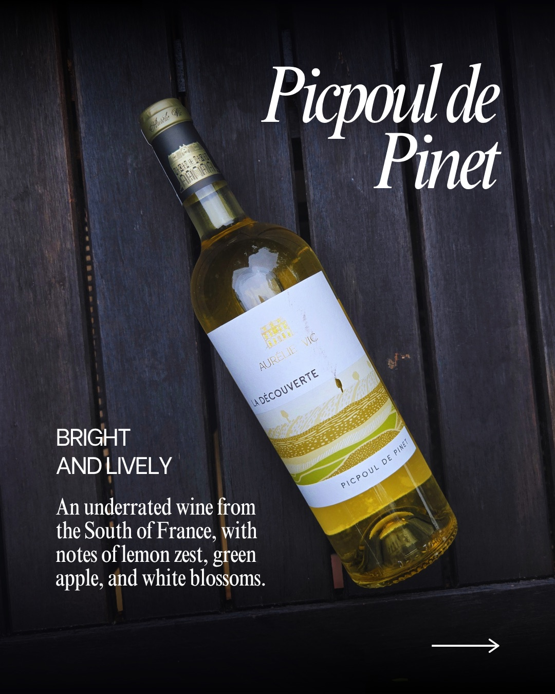
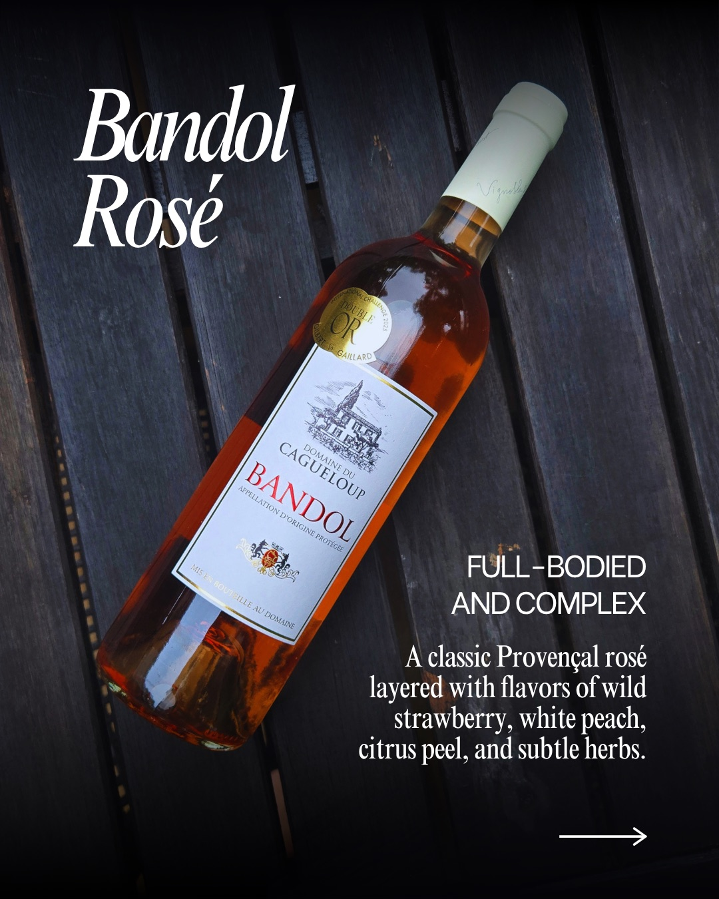
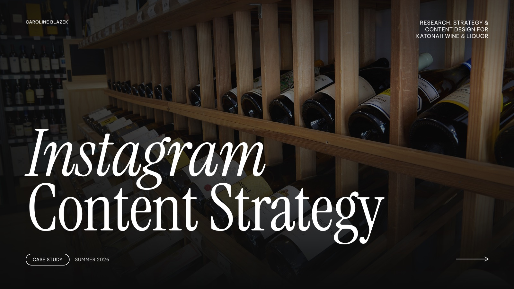

Katonah Wine & Liquor
- Content Strategy
- Social Media Design
- Art Direction
Katonah Wine & Liquor is an independent wine and spirits shop in Westchester, New York, looking to strengthen its connection with the local community and expand its digital presence. I developed a social media and marketing strategy that brought together content planning, visual direction, and original photography to position the store as a resource for discovery, education, and local connection.



Objective
The store's Instagram relied primarily on straightforward product photography, with little visual consistency or content beyond promoting inventory and tastings. Through research into independent retail marketing, I identified an opportunity to shift the focus from products to the people, expertise, and experiences behind the store. I took the lead on visual direction and content strategy across Instagram posts, Stories, Reels, and product photography, extending the system into monthly email templates and in-store materials.


Strategy & Creative Direction
I organized the content around four pillars: education and discovery, community and personality, products and new arrivals, and events and engagement. A flexible visual system of typography and layout brought consistency across formats, while original photography and video replaced repetitive bottle shots with more contextual, lifestyle-driven imagery. I additionally collaborated with suppliers and other local businesses to create cross-branded community campaigns.



Results & Reach
Over the summer, the account's following grew by 20%, with 53% of views coming from non-followers and overall reach increasing by 40%. Reels quickly became the strongest-performing content format, which prompted a greater emphasis on short-form video throughout the campaign. The resulting system gave the store a more recognizable digital presence.
